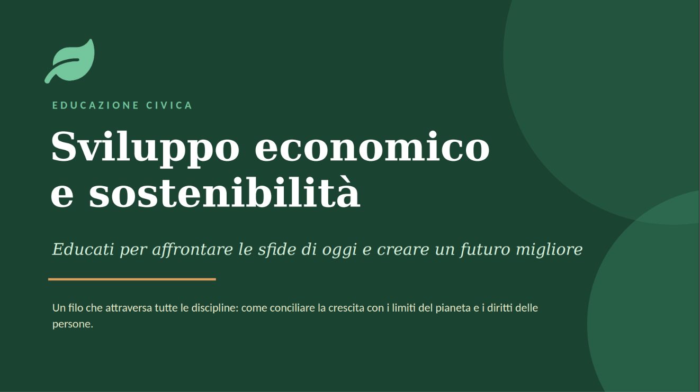

Le tre aree del percorso
Un racconto in tre sezioni
Presentazione personale, FSL e Educazione Civica: tre parti distinte che raccontano esperienze, competenze e crescita maturate nel corso degli anni.
01

Presentazione personale
Sport, obiettivi, esperienze, volontariato e crescita personale: una panoramica su ciò che mi rappresenta davvero.
Apri sezione
02

FSL (ex PCTO)
Le esperienze formative più significative svolte durante il triennio, tra orientamento, competenze e attività di crescita.
Apri sezione
03

Educazione Civica
Un approfondimento sul tema dello sviluppo sostenibile, della responsabilità e del rapporto tra crescita economica e futuro.
Apri sezione